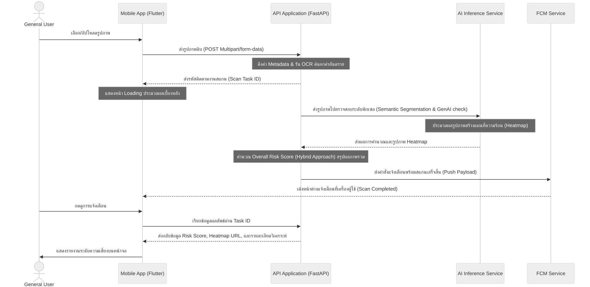

UX/UI & System Design Overview
เอกสารฉบับนี้อธิบายรายละเอียดโครงสร้างการออกแบบส่วนหน้าบ้าน Frontend Mobile Application ที่พัฒนาด้วย Flutter ของระบบ Scam Image Detection โดยครอบคลุมสถาปัตยกรรมซอฟต์แวร์, ระบบการออกแบบ UI/UX, โครงสร้างหน้าจอ และแผนผังการไหลของข้อม…
การออกแบบแอปพลิเคชันบนอุปกรณ์เคลื่อนที่ (Mobile Application Design)
โครงงาน: แอปตรวจสอบรูปภาพตัดต่อที่ถูกนำมาหลอกลวง (Scam Image Detection)
เอกสารฉบับนี้อธิบายรายละเอียดโครงสร้างการออกแบบส่วนหน้าบ้าน (Frontend Mobile Application) ที่พัฒนาด้วย Flutter ของระบบ Scam Image Detection โดยครอบคลุมสถาปัตยกรรมซอฟต์แวร์, ระบบการออกแบบ UI/UX, โครงสร้างหน้าจอ และแผนผังการไหลของข้อมูลผู้ใช้งาน (User Flow)
1. สถาปัตยกรรมซอฟต์แวร์ฝั่ง Mobile App (Software Architecture)
แอปพลิเคชันพัฒนาด้วย Flutter โดยยึดตามหลักการออกแบบ Clean Architecture และแบ่งการเขียนโค้ดตามรูปแบบ MVVM (Model-View-ViewModel) ร่วมกับ State Management ของ BLoC (Business Logic Component) เพื่อแยก Logic การทำงานออกจาก UI อย่างชัดเจน

ดู Mermaid source
flowchart TD
subgraph UI_Layer [Presentation Layer / UI]
Views("Views (Widgets)<br>[UI Elements]")
Blocs("ViewModels (BLoC)<br>[State Management]")
end
subgraph Domain_Layer [Domain Layer / Business Rules]
Entities("Entities<br>[Data Models]")
UseCases("Use Cases<br>[Business Logic]")
end
subgraph Data_Layer [Data Layer / Source]
Repositories("Repositories Interface<br>& Implementation")
DataSources("Data Sources<br>[Local Cache & REST API via Dio]")
end
%% Connections
Views --> Blocs
Blocs --> UseCases
UseCases --> Entities
UseCases --> Repositories
Repositories --> DataSources
รายละเอียดโครงสร้าง Layer
- Presentation Layer: ประกอบด้วย Widget ต่าง ๆ ที่ทำหน้าที่แสดงผลหน้าตาแอป และ BLoC ที่ทำหน้าที่รับ Event จากหน้าจอ ประมวลผลเปลี่ยนสถานะ (State) แล้วส่งผลลัพธ์กลับไปอัปเดต UI
- Domain Layer: แกนกลางที่ไม่ขึ้นตรงกับเฟรมเวิร์กใด ๆ ประกอบด้วยโมเดลข้อมูลหลัก (Entities) และคลาสคำสั่งธุรกิจ (Use Cases) เช่น การส่งตรวจวิเคราะห์ภาพ หรือการเรียกดูประวัติ
- Data Layer: จัดการเชื่อมต่อกับแหล่งข้อมูลภายนอก โดยเชื่อมต่อ REST API ผ่าน HTTP Client (คลาส Dio) และการจัดเก็บโทเคนความปลอดภัยใน Secure Storage
2. ระบบการออกแบบ UI/UX และธีมสี (Design System & Theme)
แอปพลิเคชันออกแบบภายใต้ธีม Dark Mode เพื่อเน้นความล้ำสมัย ปลอดภัย และลดอาการเมื่อยล้าสายตา โดยใช้สีและแบบอักษรที่คัดสรรเป็นพิเศษดังนี้:
โทนสีของระบบ (Color Palette)
- สีพื้นหลังหลัก (Primary Background): Slate Gray (#121824) ให้ความรู้สึกมั่นคง สบายตา
- สีพื้นหลังรอง (Secondary Background): Navy Blue Gray (#1A2333) สำหรับการสร้างกล่องข้อความและส่วนประกอบย่อย
- สีเน้นการทำงาน (Accent/Primary Color): Neon Cyan (#00E5FF) สีฟ้าสว่าง ใช้สำหรับปุ่มกดหลักและองค์ประกอบที่ต้องการเน้นสายตา
- สีสถานะความเสี่ยง (Risk Indicators):
- ความเสี่ยงต่ำ (Low Risk): Emerald Green (#00E676)
- ความเสี่ยงปานกลาง (Medium Risk): Amber Yellow (#FFD700)
- ความเสี่ยงสูง (High Risk): Crimson Red (#FF1744)
ตัวอักษร (Typography — canonical ตรงกับ design/design.md และ
design/mobile/requirements.md REQ-NF-004)
- เลือกใช้แบบอักษร Sarabun สำหรับข้อความภาษาไทยและภาษาอังกฤษเพื่อให้อ่านง่ายและมีความเป็นทางการ
- ใช้แบบอักษร Inter (จาก Google Fonts) สำหรับตัวเลข ข้อมูล และข้อความเชิงเทคนิค
3. โครงสร้างหน้าจอและทางเดินของผู้ใช้ (App Screen Structure & Navigation)
หน้าจอหลักของแอปพลิเคชันประกอบไปด้วย 5 หน้าจอหลักที่เชื่อมต่อผ่านระบบ Bottom Navigation Bar:

ดู Mermaid source
flowchart LR
Splash[Splash Screen] --> Login[Login / OAuth]
Login --> Home[Home Screen]
Home --> Nav[Navigation Bar]
Nav --> NavHome[Home / Scan Screen]
Nav --> NavHistory[History Screen]
Nav --> NavSettings[Settings & PDPA Screen]
NavHome --> Result[Analysis Result Screen]
Result --> Report[Report Scam Screen]
รายละเอียดหน้าที่ของแต่ละหน้าจอ
1. Splash Screen
- ทำหน้าที่โหลดการตั้งค่าระบบ ตรวจเช็กโทเคนการเข้าสู่ระบบเดิม (Session Token)
- หากผู้ใช้เคยล็อกอินค้างไว้ ระบบจะข้ามไปหน้า Home ทันที หากไม่มีจะพาไปหน้า Login
2. Login & Authentication Screen
- หน้าจอกรอก Email/Password (Google Login / Apple ID เป็น Phase 2)
- มีลิงก์สำหรับสมัครสมาชิกใหม่ และระบบขอเปลี่ยนรหัสผ่านใหม่ (Forgot Password)
3. Home / Scan Screen (หน้าแรกและนำเข้ารูปภาพ)
- เป็นหน้าหลักเมื่อเปิดแอป ประกอบด้วย:
- ปุ่มกดสำหรับ นำเข้ารูปภาพจากคลังภาพ (Gallery) เพื่ออัปโหลดเข้าสู่ระบบ
- เมนูแนะนำภัยออนไลน์ (Scam Alerts Feed) สำหรับอัปเดตกลโกงใหม่ ๆ จากผู้ดูแลระบบ
- เมื่อเลือกรูปภาพเสร็จ แอปจะส่งไปยังหน้าครอปตัดรูป (Image Cropper Widget) ก่อนจะเริ่มส่งขึ้น API และแสดงสถานะกำลังวิเคราะห์ (Loading Shimmer Effect)
4. Analysis Result Screen (หน้าแสดงผลลัพธ์)
- แสดงผลคะแนนความเสี่ยงรวม (Overall Risk Score) ในรูปของมาตรวัดวงกลมสี (Radial Risk Gauge) พร้อมผลแจกแจงแยก 3 มิติ (Multi-Factor Breakdown)
- ตัวเลือกระหว่าง:
- หน้าแสดงข้อมูลภาพต้นฉบับ
- หน้าภาพ Heatmap (แสดง Heatmap ที่ชี้พิกเซลผิดปกติจาก AI)
- รายละเอียดผลวิเคราะห์ 3 มิติ (Multi-layer Analysis Breakdown):
- ผลตรวจสอบ OCR & คำอันตราย (Textual Detection)
- ผลตรวจสอบข้อมูลไฟล์และอุปกรณ์ที่ใช้บันทึกภาพ (Metadata Check)
- ผลตรวจสอบแหล่งที่มาดั้งเดิม (Reverse Image Search Results)
- ปุ่มกดรายงานเบาะแสเข้าระบบกลาง (Report to Scam DB) และปุ่มแชร์รูปภาพแจ้งเตือน (Share Scam Alert)
5. History Screen (หน้าประวัติการสแกน)
- หน้าแสดงรายการการสแกนที่ผ่านมา จัดเรียงตามวัน-เวลา
- แสดงข้อมูลสรุปย่อ เช่น รูปตัวอย่าง, วันที่สแกน, และระดับความเสี่ยง
- ฟังก์ชันการลบประวัติทีละรายการ (Slide to delete) หรือลบทั้งหมดในครั้งเดียว
6. Settings & PDPA Screen (หน้าการตั้งค่าและสิทธิ์)
- จัดการข้อมูลส่วนตัว และเปลี่ยนรหัสผ่าน
- ส่วนจัดการข้อตกลงความเป็นส่วนตัว (PDPA / Consent Management) ให้ผู้ใช้สามารถกดยกเลิกความยินยอมการส่งไฟล์ภาพเข้าคลังวิจัยย้อนหลังได้ตลอดเวลา
4. แผนผังการทำงานและการประมวลผลข้อมูล (Sequence Flow)
ขั้นตอนการส่งรูปภาพขึ้นไปประมวลผลและส่งการแจ้งเตือนกลับมายังแอปพลิเคชันมือถือ:

ดู Mermaid source
sequenceDiagram
actor User as General User
participant App as Mobile App (Flutter)
participant API as API Application (FastAPI)
participant AI as AI Inference Service
participant Push as FCM Service
User->>App: เลือก/อัปโหลดรูปภาพ
App->>API: ส่งรูปภาพดิบ (POST Multipart/form-data)
Note over API: ดึงค่า Metadata & รัน OCR ค้นหาคำอันตราย
API-->>App: ส่งรหัสติดตามงานสแกน (Scan Task ID)
Note over App: แสดงหน้า Loading ประมวลผลเบื้องหลัง
API->>AI: ส่งรูปภาพไปตรวจสอบระดับพิกเซล (Semantic Segmentation & GenAI check)
Note over AI: ประมวลผลรูปภาพสร้างแผนที่ความร้อน (Heatmap)
AI-->>API: ส่งผลการคำนวณและรูปภาพ Heatmap
Note over API: คำนวณ Overall Risk Score (Hybrid Approach) สรุปผลภาพรวม
API->>Push: ส่งคำสั่งแจ้งเตือนพร้อมสแกนเสร็จสิ้น (Push Payload)
Push-->>App: เด้งหน้าต่างแจ้งเตือนที่เครื่องผู้ใช้ (Scan Completed)
User->>App: กดดูการแจ้งเตือน
App->>API: เรียกข้อมูลผลลัพธ์ผ่าน Task ID
API-->>App: ส่งกลับข้อมูล Risk Score, Heatmap URL, และรายละเอียดวิเคราะห์
App->>User: แสดงรายงานระดับความเสี่ยงบนหน้าจอ